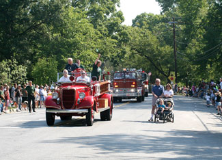

Greenbelt, Md., was built in 1937 by the federal government as a model for an affordable, planned community with a high quality of life. A suburb of Washington, D.C., its layout is based on several innovative design concepts put forth by President Franklin D. Roosevelt. Cars and people are kept separate with pedestrian pathways that never cross roads, passing beneath them instead. The pathways allow safe pedestrian access to the commercial district and civic center. Houses are clustered in “superblocks” with open space around them, encouraging each sub-neighborhood to form a strong community bond.
The original town was designed in a semicircle of homes with the town center as the hub. The forest preserve, about 150 acres on the outer rim of the semicircle, is a natural buffer that defines and enriches the town. It’s currently home to bobcats, foxes, bald eagles and even a black bear, if you believe the rumors. Adjacent to Greenbelt are the expansive farm fields of the Beltsville Agricultural Research Center, and Greenbelt National Park (1,100 acres). The town itself has 23 playgrounds, a lake, several recreation centers and a community garden that began as a Victory Garden during World War II.
Another feature persists from Greenbelt’s original design: an understanding that residents will work as a team to save money and build community. Most of the businesses and associations in the town are run cooperatively. For example, the Greenbelt Consumer’s Cooperative grocery store has 6,000 members, who volunteer when necessary to keep the business running smoothly.
The Greenbelt Nursery School relies on the skills of parents, staff and community members to enrich learning at the school, which is considered a shared responsibility. The credit union, newspaper and even the local New Deal Café operate with this shared benefits/shared responsibility approach. “When there’s a need in the community, you can bet that a team will self-assemble to take care of it,” says Mayor Judith Davis.
If community and cooperation are key benefits of Greenbelt, so is access. The town is conveniently linked by rail, bus and highway to jobs and recreation. Says resident Kim Kash, “I can be on Capitol Hill in 15 to 20 minutes, to the Smithsonian in half an hour or over to some event in Baltimore in 45 minutes, yet Greenbelt doesn’t feel suburban. It’s a village.”
Population: 22,000
Median House Price: $228,000
Climate: Mild winters, hot summers. January average: 32 degrees; July average: 76 degrees.
Natural Assets: Elevation: 180 feet; Greenbelt National Park within walking distance; lake and wildlife sanctuary.
Sustainability Initiatives: Cooperative efforts to restore original Greenbelt homes in an energy-efficient way; restoration of local lake; civic commitment to frugal lifestyle with a rich public life that makes large houses unnecessary.
Check out the other towns on our 2009 list of Great Places You’ve Never Heard Of.
|
 BEVERLY PALAU Greenbelt residents enjoy a parade. |
|
|